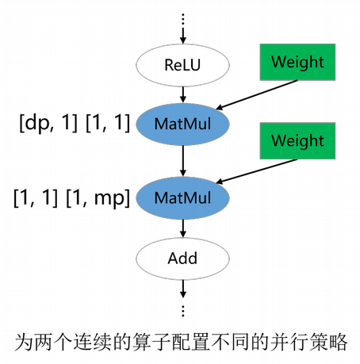

切分策略传播算法

概述
切分策略传播算法是指，用户仅需要手工定义几个关键算子的策略，计算图中其余算子的策略由算法自动生成。因为关键算子的策略已被定义，该算法的cost model主要描述的算子之间的重排布代价(Redistribution Cost)，优化目标为全图重排代价最小。因为已经定义了主要算子策略，相当于认为压缩了搜索空间，这种方案的搜索时间较短，其策略性能依赖于关键算子策略的定义，因此仍然要求用户具备一定的分析定义策略的能力。
切分策略传播算法支持的硬件平台包括Ascend、GPU，此外还同时支持PyNative模式和Graph模式。
相关接口：
mindspore.set_auto_parallel_context(parallel_mode=ParallelMode.AUTO_PARALLEL, search_mode="sharding_propagation")：设置并行模式为自动并行，且搜索模式为切分策略传播算法。mindspore.nn.Cell.shard()以及mindspore.ops.Primitive.shard()：指定算子切分策略，其余算子的策略通过传播算法推导得到。目前mindspore.nn.Cell.shard()接口需要在PyNative模式下使用。
总而言之，切分策略传播算法需要用户手动配置关键算子的切分策略。
基本原理
给定计算图，切分策略传播（Sharding Propagation）使得策略由配置的算子传播到整张计算图的所有算子。在传播过程中，策略选择的目标是最小化张量重排布产生的通信代价。
切分策略传播的输入是带有一些算子切分策略的计算图，其中的点表示算子，有向边表示数据依赖关系。切分策略传播的执行流程如下：
为未配置切分策略的算子生成可行的切分策略；
为每条边生成重排布策略及相应的代价；
从已配置切分策略的算子出发，利用广度优先搜索将切分策略传播到其它未配置切分策略的算子。传播过程的目标是最小化每条边上的重排布通信代价。若在当前传播路径上遇到已配置策略的算子，则停止传播。
下图所示的是切分策略传播的一个流程实例。在给定带有切分策略的计算图后，首先为没有配置切分策略的算子枚举其可行的策略，如下图(b)所示。然后，为每条边枚举重排布策略和相应的代价。如下图(c)所示，这里的重排布策略定义为二元组[s_strategy, t_strategy]，其中s_strategy表示的是源算子（下图(c)中的ReLU）的切分策略，t_strategy表示的是目的算子（下图(c)中的MatMul）的切分策略。当沿着一条边传播到下一个算子时（如图中ReLU切分策略已确定，为[2, 4]，下一步要决定MatMul算子的切分策略），总是在表中选择引起通信代价最小的目的算子的策略（即为MatMul选择[[2, 4], [4, 1]]）。最后，所有算子的切分策略都被确定，如下图(d)所示。

操作实践
下面以Ascend或者GPU单机8卡为例，进行切分策略传播操作说明：
样例代码说明
下载完整的样例代码：sharding_propagation。
目录结构如下：
└─ sample_code
├─ sharding_propagation
├── train.py
└── run.sh
...
其中，train.py是定义网络结构和训练过程的脚本。run.sh是执行脚本。
配置分布式环境
通过context接口指定运行模式、运行设备、运行卡号等，与单卡脚本不同，并行脚本还需指定并行模式parallel_mode为自动并行模式，搜索模式search_mode为切分策略传播，并通过init初始化HCCL或NCCL通信。device_target会自动指定为MindSpore包对应的后端硬件设备。
import mindspore as ms
from mindspore.communication import init
ms.set_context(mode=ms.GRAPH_MODE, save_graphs=2)
ms.set_auto_parallel_context(parallel_mode=ms.ParallelMode.AUTO_PARALLEL, search_mode="sharding_propagation")
init()
ms.set_seed(1)
数据集加载
数据集加载方式与单机加载方式一致，代码如下：
import os
import mindspore.dataset as ds
def create_dataset(batch_size):
dataset_path = os.getenv("DATA_PATH")
dataset = ds.MnistDataset(dataset_path)
image_transforms = [
ds.vision.Rescale(1.0 / 255.0, 0),
ds.vision.Normalize(mean=(0.1307,), std=(0.3081,)),
ds.vision.HWC2CHW()
]
label_transform = ds.transforms.TypeCast(ms.int32)
dataset = dataset.map(image_transforms, 'image')
dataset = dataset.map(label_transform, 'label')
dataset = dataset.batch(batch_size)
return dataset
data_set = create_dataset(32)
定义网络
网络的定义以FeedForward Network（FFN）为例，与单卡网络区别在于增加了ops.MatMul()算子的切分策略：
目前Graph模式下仅支持对ops算子进行切分。
import mindspore as ms
from mindspore import nn, ops
from mindspore.common.initializer import initializer
class Dense(nn.Cell):
def __init__(self, in_channels, out_channels):
super().__init__()
self.weight = ms.Parameter(initializer("normal", [in_channels, out_channels], ms.float32))
self.bias = ms.Parameter(initializer("normal", [out_channels], ms.float32))
# matmul即为被切分的算子
self.matmul = ops.MatMul()
self.add = ops.Add()
def construct(self, x):
x = self.matmul(x, self.weight)
x = self.add(x, self.bias)
return x
class FFN(nn.Cell):
def __init__(self):
super().__init__()
self.flatten = ops.Flatten()
self.dense1 = Dense(28*28, 64)
self.relu = ops.ReLU()
self.dense2 = Dense(64, 10)
def construct(self, x):
x = self.flatten(x)
x = self.dense1(x)
x = self.relu(x)
x = self.dense2(x)
return x
net = FFN()
# 配置dense1中的matmul算子切分策略为((2, 1), (1, 4))
net.dense1.matmul.shard(((2, 1), (1, 4)))
训练网络
在这一步，我们需要定义损失函数、优化器以及训练过程，这部分与单卡写法一致：
import mindspore as ms
from mindspore import nn, ops
optimizer = nn.Momentum(net.trainable_params(), 1e-3, 0.1)
loss_fn = nn.CrossEntropyLoss()
def forward_fn(data, target):
logits = net(data)
loss = loss_fn(logits, target)
return loss, logits
grad_fn = ops.value_and_grad(forward_fn, None, net.trainable_params(), has_aux=True)
@ms.jit
def train_step(inputs, targets):
(loss_value, _), grads = grad_fn(inputs, targets)
optimizer(grads)
return loss_value
for epoch in range(10):
i = 0
for image, label in data_set:
loss_output = train_step(image, label)
if i % 100 == 0:
print("epoch: %s, step: %s, loss is %s" % (epoch, i, loss_output))
i += 1
运行单机八卡脚本
接下来通过命令调用对应的脚本，以mpirun启动方式，8卡的分布式训练脚本为例，进行分布式训练：
bash run.sh
训练完后，日志文件保存到log_output目录下，通过在train.py中设置context: save_graphs=2，可以打印出编译过程中的IR图，其中部分文件目录结构如下：
├─ log_output
| └─ 1
| ├─ rank.0
| | └─ stdout
| ├─ rank.1
| | └─ stdout
| ...
├─ rank_0
| ├─ step_parallel_begin_xxxx.ir
| ├─ xx_validate_xxx.ir
| ...
├─ rank_1
| ├─ step_parallel_begin_xxxx.ir
| ├─ xx_validate_xxx.ir
| ...
...
关于Loss部分结果保存在log_output/1/rank.*/stdout中，示例如下：
epoch: 0, step: 0, loss is 2.3016691
epoch: 0, step: 100, loss is 2.2160375
epoch: 0, step: 200, loss is 1.7746857
epoch: 0, step: 300, loss is 1.0550221
epoch: 0, step: 400, loss is 0.763592
epoch: 0, step: 500, loss is 0.5714973
epoch: 0, step: 600, loss is 0.4949431
epoch: 0, step: 700, loss is 0.4682496
epoch: 0, step: 800, loss is 0.29194525
epoch: 0, step: 900, loss is 0.43532845
epoch: 0, step: 1000, loss is 0.46586612
...
在step_parallel_begin_xxxx.ir中，可以看到每个计算算子都被配置了切分策略：
...
%4(logits) = MatMul(%2, %3) {instance name: matmul} primitive_attrs: {input_names: [x1, x2], out_strategy: None, transpose_x2: Bool(0), transpose_b: Bool(0), in_strategy: ((2, 1), (1, 4)), output_names: [output], transpose_a: Bool(0), transpose_x1: Bool(0)} {in_strategy: ((2, 1), (1, 4))}
: (<Tensor[Float32], (256, 784)>, <Tensor[Float32], (784, 64)>) -> (<Tensor[Float32], (256, 64)>)
# Scope: (Default)
%5([CNode]1647) = Load($(@1_train_step.1349:para4_dense1.bias), %para16_u)
: (<Ref[Tensor[Float32]], (64), ref_key=:dense1.bias>, <UMonad, NoShape>) -> (<Tensor[Float32], (64)>)
# Scope: (Default)
%6(logits) = Add(%4, %5) {instance name: add} primitive_attrs: {output_names: [output], input_names: [x, y]} {in_strategy: ((2, 4), (4))}
: (<Tensor[Float32], (256, 64)>, <Tensor[Float32], (64)>) -> (<Tensor[Float32], (256, 64)>)
# Scope: (Default)
%7(logits) = ReLU(%6) {instance name: relu} primitive_attrs: {output_names: [output], input_names: [x]} {in_strategy: ((2, 4))}
: (<Tensor[Float32], (256, 64)>) -> (<Tensor[Float32], (256, 64)>)
# Scope: (Default)
%8([CNode]1641) = Load($(@1_train_step.1349:para5_dense2.weight), %para16_u)
: (<Ref[Tensor[Float32]], (64, 10), ref_key=:dense2.weight>, <UMonad, NoShape>) -> (<Tensor[Float32], (64, 10)>)
# Scope: (Default)
%9(logits) = MatMul(%7, %8) {instance name: matmul} primitive_attrs: {output_names: [output], transpose_a: Bool(0), input_names: [x1, x2], transpose_x2: Bool(0), transpose_x1: Bool(0), transpose_b: Bool(0)} {in_strategy: ((2, 4), (4, 1))}
: (<Tensor[Float32], (256, 64)>, <Tensor[Float32], (64, 10)>) -> (<Tensor[Float32], (256, 10)>)
# Scope: (Default)
...
例如对于上面的第一个MatMul算子，输入的策略in_strategy已被配置为((2, 1), (1, 4))，Add算子的切分策略被配置为((2, 4), (4))。
(<Tensor[Float32], (256, 784)>, <Tensor[Float32], (784, 64)>) -> (<Tensor[Float32], (256, 64)>)
代表算子的原输入，对于第一个MatMul算子，第一、第二个输入的shape分别为(256, 784)、(784, 64)，输出的shape为(256, 64)。
在xx_validate_xxx.ir中，可以看到各个算子的输入输出张量是已经被切分后的：
...
%3(equiv[CNode]4) = MatMul(%1, %2) {instance name: matmul} primitive_attrs: {input_names: [x1, x2], out_strategy: None, transpose_x2: Bool(0), transpose_b: Bool(0), in_strategy: ((2, 1), (1, 4)), output_names: [output], transpose_a: Bool(0), transpose_x1: Bool(0)} cnode_attrs: {related_comm_node_id: "30707"} cnode_primal_attrs: {unique_id: "31021", related_fusion_key: "all_reduce_2-511848487187618470_1", related_node_id: "28192"} {in_strategy: ((2, 1), (1, 4))}
: (<Tensor[Float32], (128, 784)>, <Tensor[Float32], (784, 16)>) -> (<Tensor[Float32], (128, 16)>)
# Scope: (Default)
# In file train.py:40/ x = self.matmul(x, self.weight)/
%4(equiv[CNode]1647) = Load(%para4_dense1.bias, U) cnode_primal_attrs: {unique_id: "31025"}
: (<Ref[Tensor[Float32]], (16), ref_key=:dense1.bias>, <UMonad, NoShape>) -> (<Tensor[Float32], (16)>)
# Scope: (Default)
%5(equiv[CNode]4) = Add(%3, %4) primitive_attrs: {output_names: [output], input_names: [x, y]} cnode_attrs: {related_comm_node_id: "30709"} cnode_primal_attrs: {unique_id: "31020", related_fusion_key: "all_reduce_2-511848487187618470_1", related_node_id: "28190"} {in_strategy: ((2, 4), (4))}
: (<Tensor[Float32], (128, 16)>, <Tensor[Float32], (16)>) -> (<Tensor[Float32], (128, 16)>)
# Scope: (Default)
# In file train.py:41/ x = self.add(x, self.bias)/
%6(equiv[CNode]4) = ReLU(%5) {instance name: relu} primitive_attrs: {output_names: [output], input_names: [x]} cnode_primal_attrs: {unique_id: "31008"} {in_strategy: ((2, 4))}
: (<Tensor[Float32], (128, 16)>) -> (<Tensor[Float32], (128, 16)>)
# Scope: (Default)
# In file train.py:58/ x = self.relu(x)/
%7(equiv[CNode]1641) = Load(%para5_dense2.weight, U) cnode_primal_attrs: {unique_id: "31018"}
: (<Ref[Tensor[Float32]], (16, 10), ref_key=:dense2.weight>, <UMonad, NoShape>) -> (<Tensor[Float32], (16, 10)>)
# Scope: (Default)
%8(equiv[CNode]4) = MatMul(%6, %7) {instance name: matmul} primitive_attrs: {output_names: [output], transpose_a: Bool(0), input_names: [x1, x2], transpose_x2: Bool(0), transpose_x1: Bool(0), transpose_b: Bool(0)} cnode_attrs: {related_comm_node_id: "30724"} cnode_primal_attrs: {unique_id: "31015", related_fusion_key: "all_reduce_2-511848487187618470_1", related_node_id: "28180"} {in_strategy: ((2, 4), (4, 1))}
: (<Tensor[Float32], (128, 16)>, <Tensor[Float32], (16, 10)>) -> (<Tensor[Float32], (128, 10)>)
# Scope: (Default)
# In file train.py:40/ x = self.matmul(x, self.weight)/
...
对于第一个MatMul算子，其输入根据策略((2, 1), (1, 4))切分后，第一、第二个输入的shape分别从原来的(256, 784)、(784, 64)切分为(128, 784)、(784, 16)，因此得到输出的shape为(128, 16)。
其他启动方式如动态组网、rank table的启动可参考启动方式。
配置算子切分策略的经验性原则
给定一个新模型，从用户的角度，关键问题是配置哪些算子的切分策略来获得较好的性能。由于策略传播的目标是最小化张量重排布的代价，而非最小化端到端的迭代时间，因此，为“关键算子”配置合适的切分策略是十分重要的。然而，并不存在明确的规定约束哪些算子是必须配置切分策略的。尽管如此，基于我们训练大模型的经验，确实有一些原则可以用来指导新用户配置并行策略。这里，我们列出3条经验性的原则。
配置涉及权重的算子
参数权重的切分策略是十分重要的，尤其对大模型来说，因为参数权重引起的内存消耗占据模型训练总内存消耗的大部分。因此，涉及权重的算子通常需要显式地配置切分策略。在下图的两个例子中，涉及权重的Gather和MatMul算子配置了切分策略，而其他算子没有配置。这分别对应mindformers中的数据并行Embedding层和混合并行FeedForward层。

配置维度改变的算子
深度学习框架的算子大致可以分为两类：语义简单的维度保持的算子；会改变输入张量维度的算子。对于维度保持算子，策略传播算法可以较容易地将切分策略传播出去。但是，对于维度改变算子，显式地配置切分策略才能更好地表达用户的初始想法，避免策略传播算法推导出非用户期望的切分策略。在下图的例子中，ReduceMean和MatMul是维度改变算子，它们被配置了切分策略。

配置并行方式改变的边界算子
对于类似ResNet类的模型，模型的不同部分偏好的并行方式不同：前半部分使用数据并行，后半部分使用模型并行，以此获得最优的迭代性能。这可以通过为并行方式改变的边界算子配置策略来实现。在下图的例子中，第一个MatMul配置了数据并行的策略，它会将数据并行的策略向前传播到模型的前半部分；第二个MatMul配置了模型并行的策略，它会将模型并行的策略向后传播到模型的后半部分。

用户在用策略传播时不仅需要对其传播算法本身有一定的了解，还要对要训练的模型的并行方式有一定的理解。如果存在某个由策略传播算法决定的算子的并行策略不符合用户的期望，那总可以通过多配置一个算子并行策略的方式解决。实际中，对于一个新模型，确实需要尝试几次才能获得性能较优的整体并行配置。